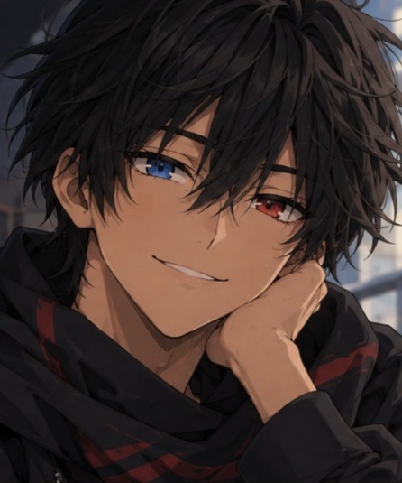
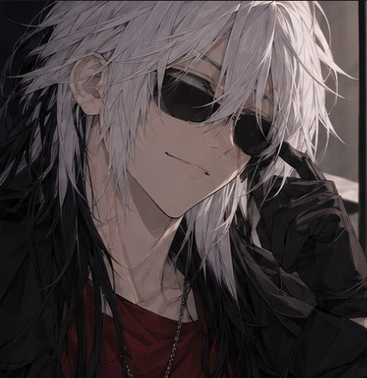
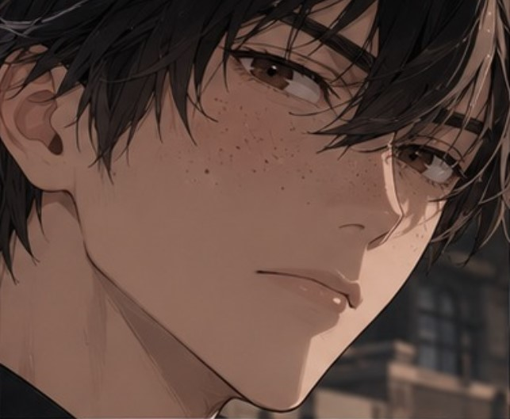
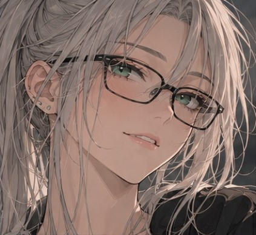

Claire Mori
Pareja romántica. Una joven de carácter intenso e impulsivo, ferozmente protectora con quienes ama.

Tras ser rechazado por su familia debido a un accidente que no provocó, fue adoptado por una familia acogedora y se mudó de su país natal. Camina por la vida, en busca de perdonarse a sí mismo y romper las cadenas del pasado que aún arrastra.

Luego de haber perdido gran parte de la visión en un accidente, vive a tientas en un mundo que no le importa ni emociona. Aunque todo cambia cuando una sombra del pasado regresa para saldar viejas deudas firmadas en sangre.

Sin hogar, sin pasado, sin recuerdos. Un huérfano sin nombre que no sabe quién es, si la sombra que escapó esa noche o el perro lazado a una correa por voluntad propia. Vive guiado solo por el deseo de proteger al pilar de su cordura y a la única estrella que brilla en la oscuridad de sus pensamientos.

Tras vivir toda su infancia y adolescencia como una "Discapacitada", su tardío despertar la llevó a replantearse todo lo que creía que ella era. Ahora, tiene que acostumbrarse a la "normalidad" y aceptar este "milagro" que no deseaba.

Guiado por el legado de su apellido e inspirado por su abuelo, se enlistó al ejército como espía contra el vigilantismo. Sin embargo, la frágil grieta entre el deber y la rebeldía se hace enorme cuando una variable inesperada sacude su mundo guiado por protocolos monótonos.
Otros rostros que forman parte de la historia de Hidden Echoes.
Pareja romántica. Una joven de carácter intenso e impulsivo, ferozmente protectora con quienes ama.


CRITICAL ERROR: DATA CORRUPTED

//ERROR// = //Info no encontrada//




Interés romántico. Una chica tímida que le gusta el arte

Hermana de Dino. Su cómplice en todo, así como la voz de la razón.

Pareja romántica. Una joven tranquila, reservada, conocida por su paciencia y sentido de justicia.